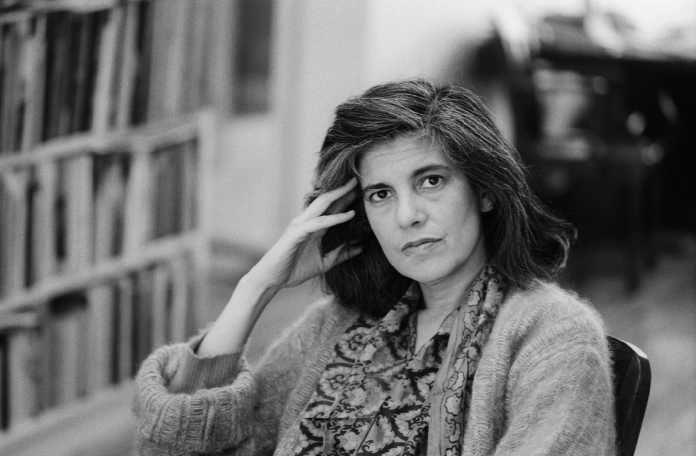

Susan Sontag
The Woman Who Shattered Stereotypes

Stills from the film: A Conversation about Susan Sontag
Here's a time line of Susan Sontag life:
- 1933 - born in New York City
- 1948 - entered the University of Berkeley (California)
- 1952 - married sociologist Philip Rieff
- 1959 - published study Freud: The Mind of the Moralist, in which she has been considered an unofficial co-author
- 1963 - the first literary novel called "Benefactor" was published, as well as several articles in prestigious American magazines
- 1964 - publication of the article "Notes on Camp" in the magazine "Partizan Review". In this article, Sontag introduced the concept of “camp” - the use of vulgar and aesthetically ugly material as a means of expression.
- 1966 - a collection of essays "Against Interpretation" about the artistic avant-garde of Europe and the USA was published
- 1977 - the series of essays "On Photography". These essays are an exploration of photographs as a collection of the world, mainly by travelers or tourists, and the way we experience it.
- 1989 - became president of the American PEN Center, the international writers’ organization dedicated to freedom of expression and the advancement of literature
- 2000 - published her final novel "In America"
- 2004 - died in New York City
"Literature was the passport to enter a larger life; that is, the zone of freedom"
Susan Sontag